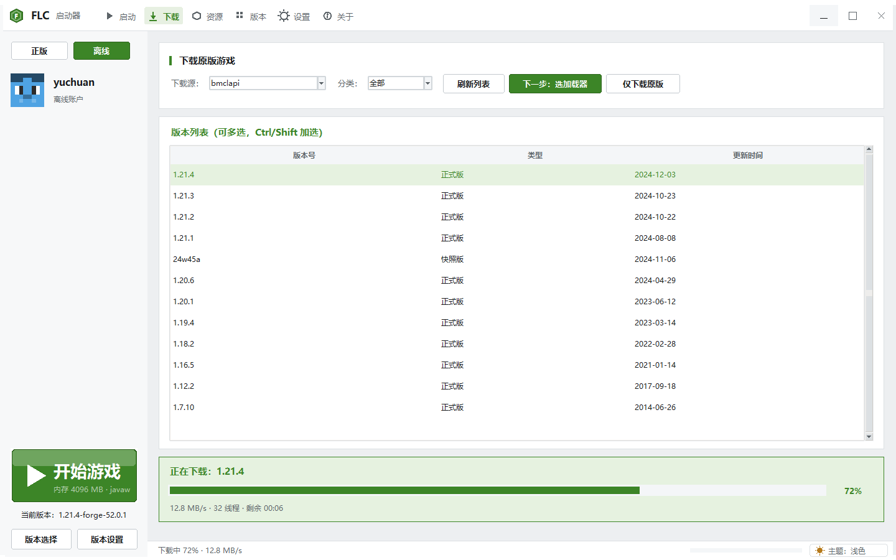

快
32 线程并发下载，BMCLAPI 国内镜像，断点续传。
全
Forge / Fabric / NeoForge / OptiFine / LiteLoader 一键装。
省
Modrinth 资源站内搜索下载，自动落到对应目录。

下载页
正式版 / 快照版分类筛选，多选批量安装。实时显示速度、线程数和剩余时间。
32 线程并发下载，BMCLAPI 国内镜像，断点续传。
Forge / Fabric / NeoForge / OptiFine / LiteLoader 一键装。
Modrinth 资源站内搜索下载，自动落到对应目录。

正式版 / 快照版分类筛选，多选批量安装。实时显示速度、线程数和剩余时间。